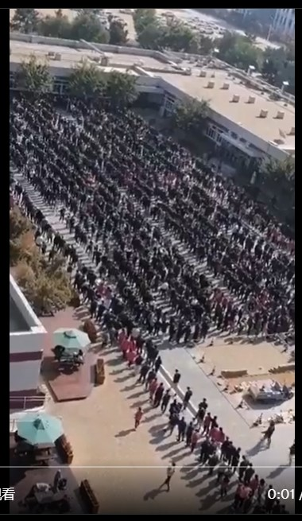

| 关于呼和浩特 |
| 关于张博洋 |
| 关于京剧 |
| 时间 | 事件 |
|---|---|
| 2022 年 9月 27日 |
呼和浩特经济技术开发区党工委原书记李建平案一审宣判：死刑 |
| 2022 年 10月 |
呼和浩特排队做核酸的群众 半夜喝酒的领导 工业大学学生不分阴阳被转移  图片来自网友 |
| 2022 年 11月 4日 |
兴光A9小区 某女子跳楼摔死 救护车迟到 单元门被铁架子焊死 网友发视频被删 物业冷漠对待其女儿诉求 某网友根据当时场景而作 （如果某一天发生了火灾或地震， 他们一栋楼里的一个也跑不了） |
| 2022 年 11月 13日 |
赛斯基因科技有限公司核酸检测结果造假 |
| 呼和浩特2022下半年有什么？ 贪污书记事件 兴光A 九事件 核酸造假事件 工业大学事件 消杀抄家事件 | |
| 呼和浩特已经烂成一堆了 | |
| 时间 | 事件 |
|---|---|
| 2021 年 6月 |
微软发布Windows11 |
| 2022 年 11月 16日 |
今天，张博洋的网站正式创建 网址： https://zhangboyaung.github.io/ 由GitHub托管 |
| 2022 年 11月 17日 |
呼和浩特 风吹草低见有阳 今天仍在隔离 形式正在好转 没想到GitHub上还有17个叫张博洋（zhangboyang）的用户 |
| 2022 年 11月 18日 |
今天张博洋——————————无事 |
| 2022 年 11月 19日 |
今天张博洋首次对网站使用 CSS（叠层样式表） |
| 2022 年 11月 22日 |
今天张博洋首次对网站使用 CSS动画效果 |
| 时间 | 事件 |
|---|---|
| 1905年 (光绪三十一年) | 我国第一部国产电影 京剧无声电影《定军山》 主演谭派创始人谭鑫培 |
| 1962年 | 京剧电影《徐策跑城》 主演周信芳 和导演应云卫  |
| 1962年 | 周信芳舞台生活六十周年纪念活动 周恩来总理前去观看《打渔杀家》 |
📭邮箱：youhulu2021@outlook.com
张博洋的GitHub： https://github.com/ZhangBoYaung